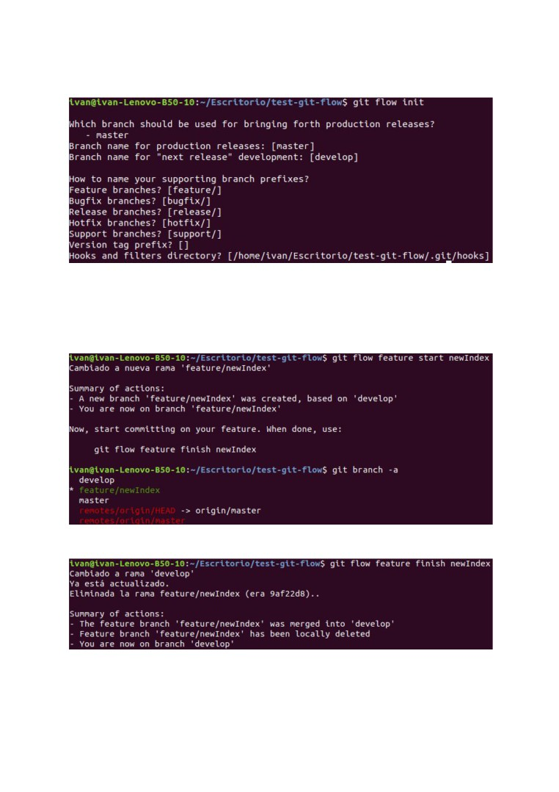
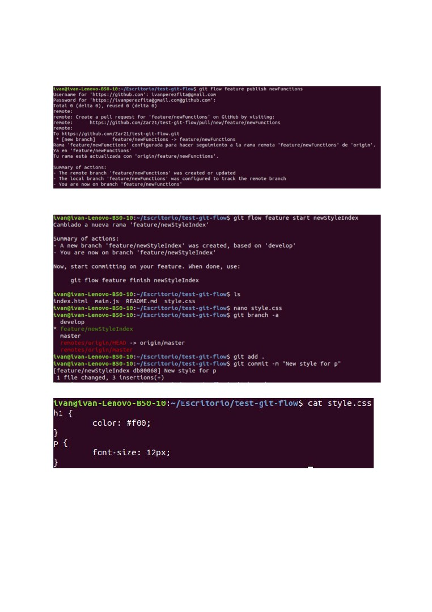
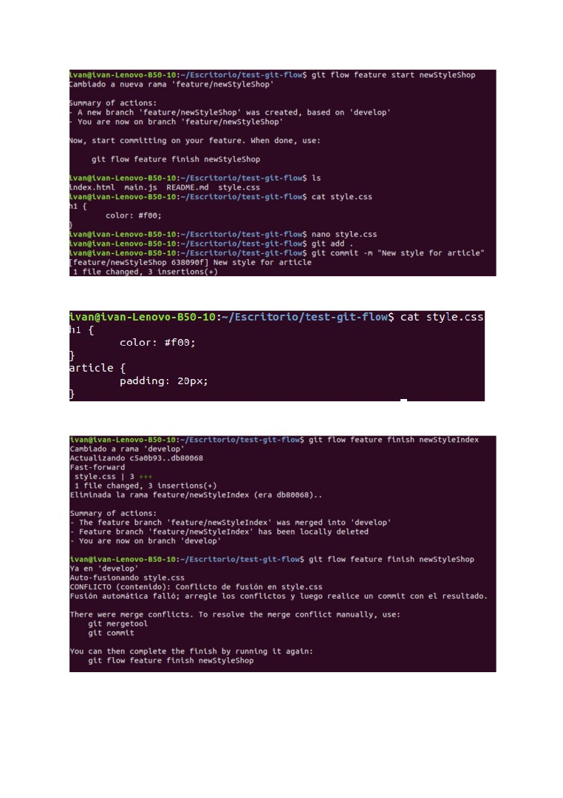
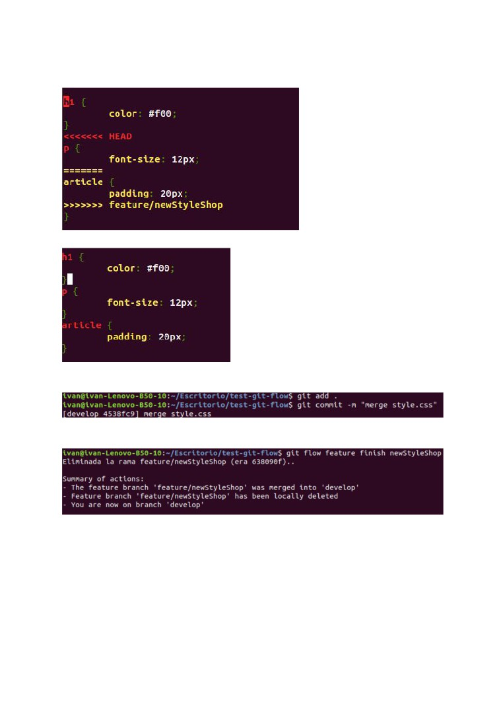
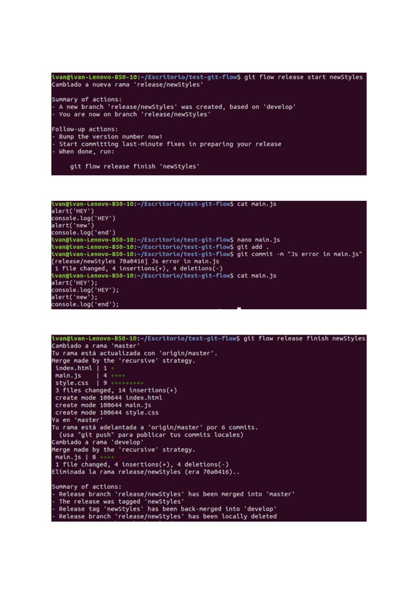
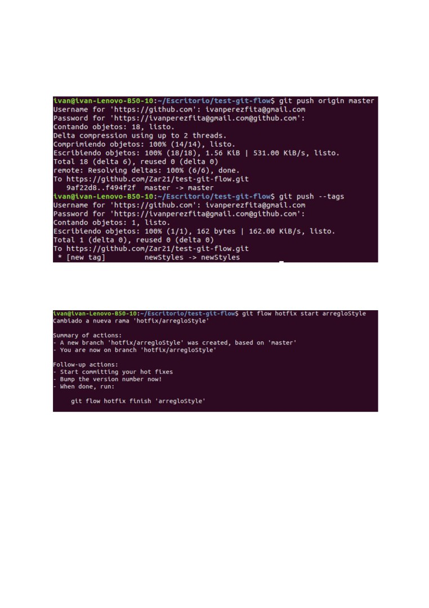
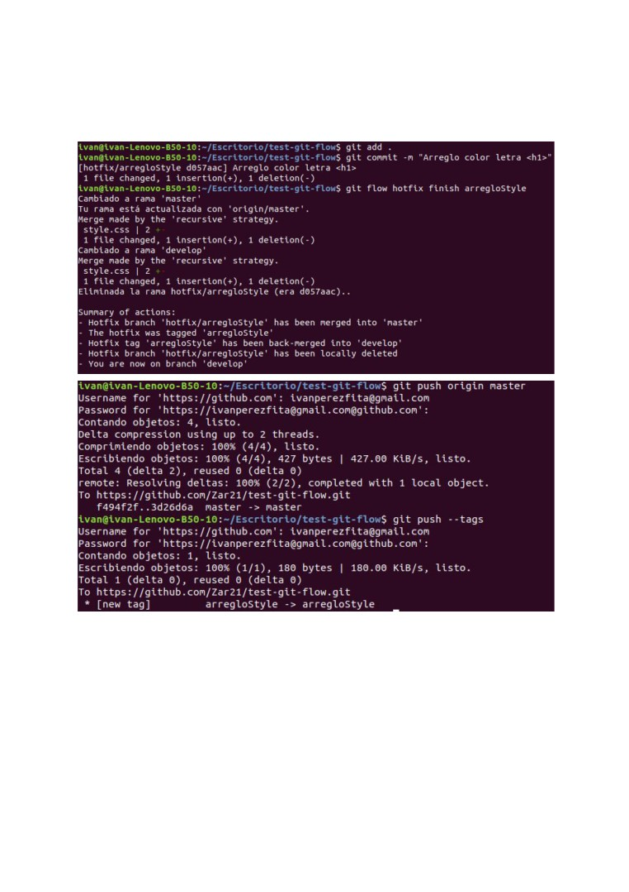

- Crear un repositorio con las ramas de master y develop.
Mediante el comando git flow init se genera la estructura de git flow sobre nuestro proyecto
- (2 puntos) Generar diferentes features con pequeños cambios en el proyecto. Algunas
de las features deben modificar un mismo fichero.
Usando los diferentes comandos de git flow podemos trabajar comodamente con la
features.
Para crear una nueva feature deberemos usar git flow feature start nombre
Cuando la feature este terminada usaremos el comando git flow feature finish nombre

Tambien podemos publicar la feature en caso de que no este terminada y queramos que
nuestros compañeros puedan acceder a ella. Para esto usaremos el comando
git flow feature publish nombre
En este caso se han creado 2 features diferentes que modifican el mismo fichero
Este es el contenido de style.css en newStyleIndex

Este es el contenido de style.css en newStyleShop
Ahora vamos a finalizar las 2 features

Como se puede observar hay un conflicto por haber modificado el mismo fichero asi que se
debe corregir manualmente
Realizamos el commit
Y finalmente podemos terminar la feature

- (1 punto) Crear una nueva release con todas las features creadas.
Para crear una release debemos usar el comando git flow release start nombre
- (1 punto) Simular que se ha detectado un error en la release y solucionarlo.
Si hay algun error en la release se debe modificar en la misma release
- (2 punto) Publicar la release en producción y esta debe quedar etiquetada.
Finalizaremos la release con git flow release finish nombre

En el proceso se pedira el commit para el merge con develop por el commit del arreglo y la
descripción de la tag que se va a crear.
Finalmente subimos los cambios de master al repositorio en remoto y ademas subimos las
tags con gut push --tags
- (1 punto) Simular la existencia de un error en producción y solucionarlo por medio de
un hotfix.
Vamos a corregir un error en el diseño de la web usando el comando
git flow hotfix start nombre

Cuando tengamos el cambio arreglado realizamos el commit y finalizamos el hotfix con el
comando git flow hotfix finish nombre. En el proceso se creara una tag asi que al momento
de subirla a remoto tambien habra que realizar el git push --tags
- (3 puntos) Documentar el proceso completo en Github Pages o Gitlab Pages.